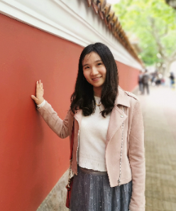

Yujiao Zhu, Ph.D.
Associate Professor
Environment Research Institute, Shandong University
- zhuyujiao@sdu.edu.cn

Biography
Yujiao Zhu earned her Ph.D. in environmental science at Ocean University of China. She studies when new atmospheric particles form, what makes them grow, and under what conditions they become large enough to act as cloud condensation nuclei.
Her research combines field observations and chamber experiments to examine marine and coastal aerosol processes, including the role of biogenic organic compounds in particle growth. She has led projects funded by the National Natural Science Foundation of China and subprojects under the National Key Research and Development Program of China. She has also served as a guest editor for Atmosphere.
Research Interests
- New particle formation and growth in urban, mountain, coastal, and marine environments
- Contribution of newly formed particles to cloud condensation nuclei and climate effects
- Field measurements and chamber experiments on marine aerosols
Education and Appointments
- 2006–2010
- B.Eng. in Environmental Engineering, Ocean University of China
- 2010–2016
- Ph.D. in Environmental Science, Ocean University of China
- 2014–2015
- Visiting Doctoral Student through a joint training program, Texas A&M University
- 2016–2019
- Postdoctoral Fellow, Ocean University of China
- 2019–2021
- Postdoctoral Fellow, Shandong University
- Nov 2021–present
- Faculty Member, Environment Research Institute, Shandong University
Awards and Honors
- Shandong Provincial Natural Science Fund for Excellent Young Scholars
- Selected for Shandong University’s Future Program for Young Scholars
Selected Research Projects
- Formation, growth, and climate effects of atmospheric particles (2025–2027).
- Vertical physical and chemical structure of the atmospheric boundary layer over megacities and complex terrain (2023–2026).
- Growth of newly formed particles aloft and their contribution to cloud condensation nuclei over the North China Plain (2020–2024).
- Effects of green tides on new particle formation and growth in coastal air.
Selected Publications
-
Critical transition of urban ozone formation regime in the North China Plain
National Science Review, 13(3), nwaf596, 2026.
-
Rapid formation of acetaldehyde and its influence on ozone formation in a petrochemical industrialized region
Journal of Environmental Sciences, 157, 134–147, 2025.
-
Measurement report: Atmospheric ice nuclei in the Changbai Mountains (2623 m a.s.l.) in northeastern Asia
Atmospheric Chemistry and Physics, 24(5), 3241–3256, 2024.
-
Investigation of Particle Number Concentrations and New Particle Formation With Largely Reduced Air Pollutant Emissions at a Coastal Semi‐Urban Site in Northern China
Journal of Geophysical Research: Atmospheres, 126(17), e2021JD035419, 2021.
-
Investigating three patterns of new particles growing to the size of cloud condensation nuclei in Beijing's urban atmosphere
Atmospheric Chemistry and Physics, 21(1), 183–200, 2021.